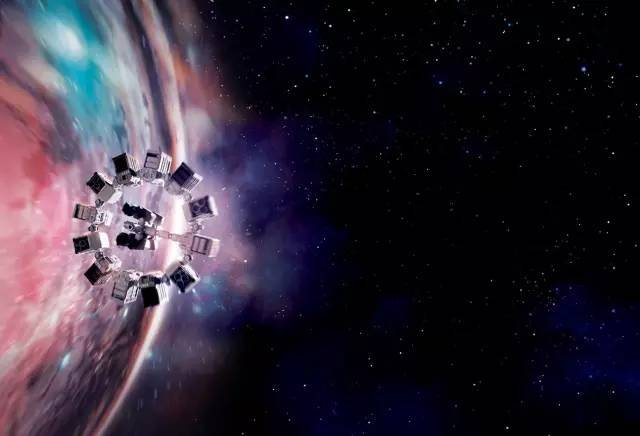
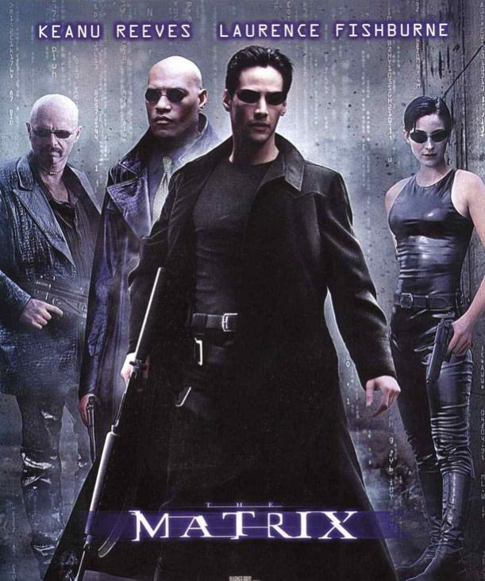
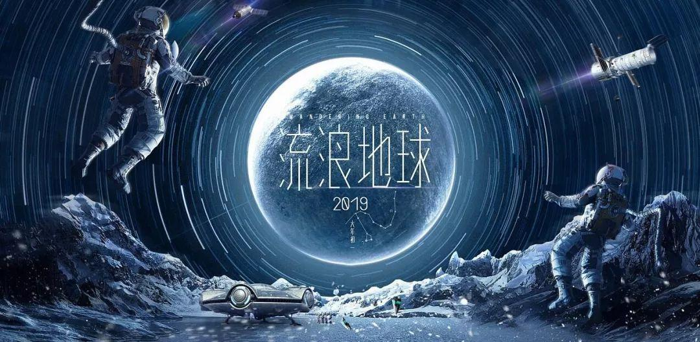

星际穿越
近未来的地球黄沙遍野，小麦、秋葵等基础农作物相继因枯萎病灭绝，人类不再像从前那样仰望星空，放纵想象力和灵感的迸发，而是每日在沙尘暴的肆虐下倒数着所剩不多的光景。在家务农的前NASA宇航员库珀（马修·麦康纳饰）接连在女儿墨菲（麦肯基·弗依饰）的书房发现奇怪的重力场现象，随即得知在某个未知区域内前NASA成员仍秘密进行一个拯救人类的计划。 多年以前土星附近出现神秘虫洞，NASA借机将数名宇航员派遣到遥远的星系寻找适合居住的星球。在布兰德教授（迈克尔·凯恩饰）的劝说下，库珀忍痛告别了女儿，和其他三名专家教授女儿艾米莉亚·布兰德（安妮·海瑟薇饰）、罗米利（大卫·吉亚斯饰）、多伊尔（韦斯·本特利饰）搭乘宇宙飞船前往目前已知的最有希望的三颗星球考察。 他们穿越遥远的星系银河，感受了一小时七年光阴的沧海桑田，窥见了未知星球和黑洞的壮伟与神秘。在浩瀚宇宙的绝望而孤独角落，总有一份超越了时空的笃定情怀将他们紧紧相连。
 百度百科黑客帝国
在矩阵中生活的一名年轻的网络黑客尼奥发现，看似正常的现实世界实际上似乎被某种力量控制着，尼奥便在网络上调查此事。而在现实中生活的人类反抗组织的船长墨菲斯，也一直在矩阵中寻找传说的救世主，就这样在人类反抗组织成员崔妮蒂的指引下，两人见面了，尼奥也在墨菲斯的指引下，回到了真正的现实中，逃离了矩阵。 尼奥这才了解到，原来他一直活在虚拟世界当中，真正的历史是，在20XX年，人类发明了AI（人工智能），然后机器人叛变，与人类爆发战争，人类节节败退，迫不得已的情况下，把整个天空布满了乌云，以切断机器人的能源（太阳能），谁知机器人又开发出了新的能源——生物能源，就是利用基因工程，人工制造人类，然后把他们接上矩阵，让他们在虚拟世界中生存，以获得多余的能量，尼奥就是其中一个。 电影剧照 电影剧照(20张) 尼奥知道后，也加入了人类反抗组织，在墨菲斯的训练下，渐渐成为了一名厉害的“黑客”，并渐渐展露出与其他黑客的不同之处，让莫菲斯也更加肯定他就是救世主，就在这个时候，人类反抗组织出现了叛徒，墨菲斯被捕，尼奥救出了墨菲斯，但在逃跑过程中，被矩阵的“杀毒软件”特工史密斯杀死，结果反而让尼奥得到了新的力量，此时真实世界中的崔妮蒂紧依着尼奥和他对话，并深深地吻了他，感受到真实世界的深情之后尼奥仿佛顿悟一般地复活了。复活后的尼奥对自己“救世主”的身份已无丝毫怀疑，明白到自己有重写矩阵内程序的能力。他马上入侵了其中一个特工程序——史密斯，令史密斯烟消云散，消失得无影无踪，其他的特工程序吓得落荒而逃。
 百度百科流浪地球
近年来，科学家们发现太阳急速衰老膨胀，短时间内包括地球在内的整个太阳系都将被太阳所吞没。为了自救，人类提出一个名为“流浪地球”的大胆计划，即倾全球之力在地球表面建造上万座发动机和转向发动机，推动地球离开太阳系，用2500年的时间奔往新家园。中国航天员刘培强（吴京 饰）在儿子刘启四岁那年前往领航员空间站，和国际同侪肩负起领航者的重任。转眼刘启（屈楚萧 饰）长大，他带着妹妹韩朵朵（赵今麦 饰）偷偷跑到地表，偷开外公韩子昂（吴孟达 饰）的运输车，结果不仅遭到逮捕，还遭遇了全球发动机停摆的事件。为了修好发动机，阻止地球坠入木星，全球开始展开饱和式营救，连刘启他们的车也被强征加入。在与时间赛跑的过程中，无数的人前仆后继，奋不顾身，只为延续百代子孙生存的希望。
 百度百科